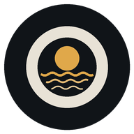

Mirage
A camera that opens at 2×, on the main lens.
2.0×
+0.0 EV
Painted scene.
The same controls as the app. Tap a preset, pinch or drag on the picture to zoom, double tap to return to the default preset, press and hold the picture to show or hide the thirds grid, press and hold a preset to save the current settings into it.
Here the browser enlarges the picture after the fact. The app asks the camera itself for the zoom, before the picture is made.
Your camera stays on your device: the page has no server and sends nothing.
What it does
- Always shoots on the main rear lens. Zoom never goes below 1×, so the camera never hops to the wide-angle lens.
- Opens straight at the default preset, 2× out of the box: the first frame is already zoomed.
- Presets hold zoom, exposure and white balance. Add, rename, delete, pick the default.
- A rule-of-thirds grid over the viewfinder; hold the picture to hide it.
- Tap the app's sign at the top to see what the camera offers: photo size, sensor size, and whether the full sensor resolution is open to the app.
- Shutter on screen, on the hardware camera key, or on either volume key.
- Photos go to the camera folder,
DCIM/Mirage. - No network, no accounts, no libraries. Android 8 and newer.
Get it
The APK is on the releases page. Source: github.com/Shumtugle/mirage.